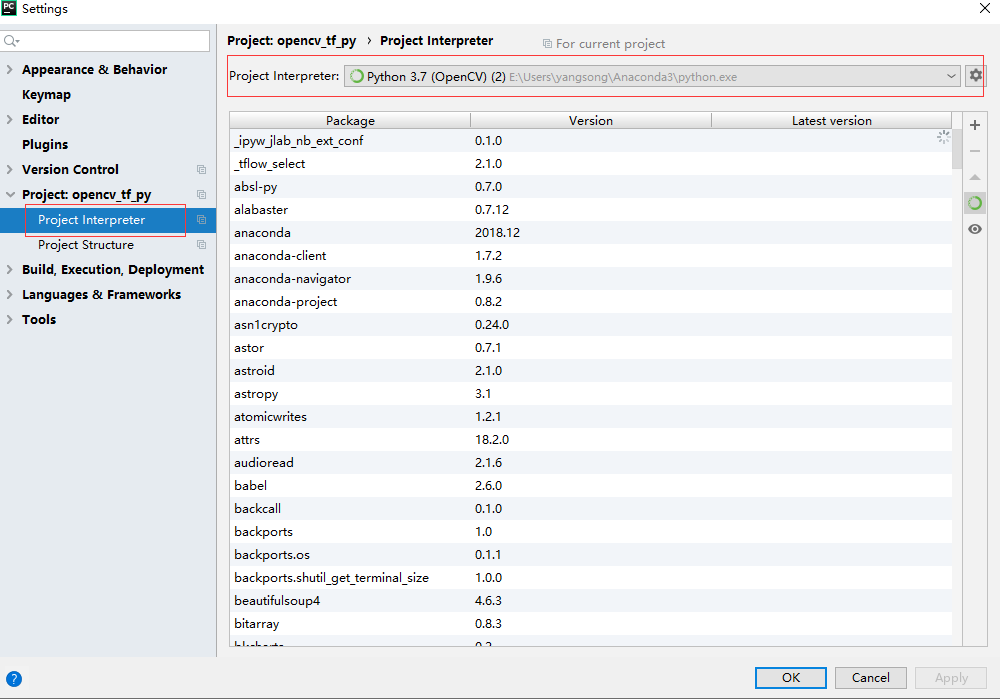
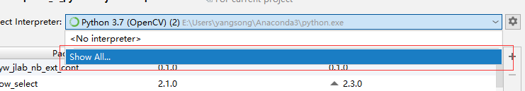
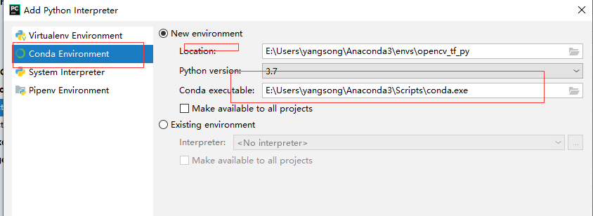
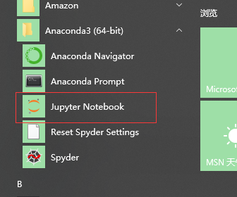
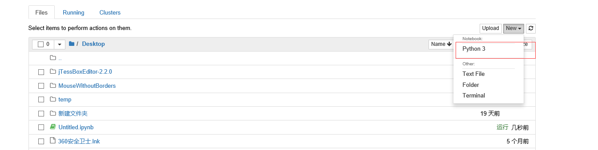
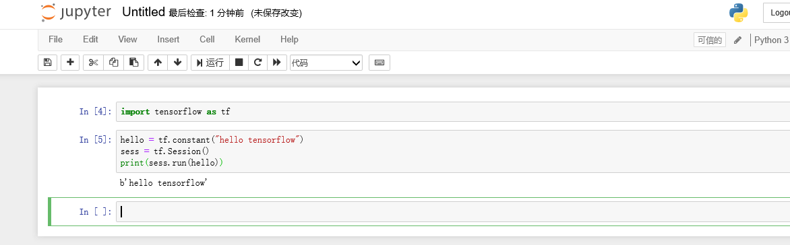

Coding
安装
下载并安装anaconda
https://www.anaconda.com/distribution/ *不用安装python,anaconda中自带python执行环境 *并且安装了pip包管理工具,conda安装提示的包没有的话，可以用pip进行安装安装OpenCV、numpy
conda install opencv安装tensorflow
conda install tensorflow下载并安装CUDA
https://developer.nvidia.com/cuda-downloads *最好安装一下显卡的最新驱动下载并安装cuDDN
https://developer.nvidia.com/cudnn *版本要和CUDA版本相对应安装GPU版本的tensorflow
conda uninstall tensorflow conda install tensorflow-gpu下载并安装PyCharm,也可以直接使用anaconda自带的Jupyter编写python
https://www.jetbrains.com/pycharm/download/#section=windows *下载社区版本即刻配置PyCharm环境



使用Jupyter



第一个OpenCV程序
import cv2
img = cv2.imread('0004.jpg')
gray = cv2.cvtColor(img,cv2.COLOR_BGR2GRAY)
gray = cv2.equalizeHist(gray);
binary = cv2.Canny(gray, 50, 200,apertureSize=3,L2gradient=False);
img1, contours, hierarchy = cv2.findContours(binary,cv2.RETR_TREE,cv2.CHAIN_APPROX_SIMPLE)
cv2.drawContours(img,contours,-1,(0,0,255),3)
cv2.imwrite("test.jpg", img)
第一个numpy程序
import numpy
import math
def softmax(isMatrix):
m,n = numpy.shape(isMatrix)
outMatrix = numpy.mat(numpy.zeros((m,n)))
soft_sum = 0
for idx in range(0,n):
outMatrix[0,idx] = math.exp(isMatrix[0,idx])
soft_sum += outMatrix[0,idx]
for idx in range(0,n):
outMatrix[0,idx] = outMatrix [0,idx] / soft_sum
return outMatrix
def main():
result = softmax(numpy.array([[1,2,1,2,1,1,3]]))
print(result)
if __name__ == '__main__':
main()
第一个tensorflow程序
import tensorflow as tf
hello = tf.constant("hello tensorflow")
sess = tf.Session()
print(sess.run(hello))
代码
https://github.com/tomsnail/opencv_tf_py